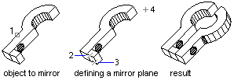

Autodesk AutoCAD 2021: ActiveX Developer's Guide > Work in Three-Dimensional Space > About Editing in 3D (VBA/ActiveX) >
With the Mirror3D method, you can mirror objects along a specified mirroring plane specified by three points.

This example creates a box in model space. It then mirrors the box about a plane and colors the mirrored box red.
Sub Ch8_MirrorABox3D()
' Create the box object
Dim boxObj As Acad3DSolid
Dim length As Double
Dim width As Double
Dim height As Double
Dim center(0 To 2) As Double
center(0) = 5#: center(1) = 5#: center(2) = 0
length = 5#: width = 7: height = 10#
' Create the box (3DSolid) object in model space
Set boxObj = ThisDrawing.ModelSpace. _
AddBox(center, length, width, height)
' Define the mirroring plane with three points
Dim mirrorPt1(0 To 2) As Double
Dim mirrorPt2(0 To 2) As Double
Dim mirrorPt3(0 To 2) As Double
mirrorPt1(0) = 1.25: mirrorPt1(1) = 0: mirrorPt1(2) = 0
mirrorPt2(0) = 1.25: mirrorPt2(1) = 2: mirrorPt2(2) = 0
mirrorPt3(0) = 1.25: mirrorPt3(1) = 2: mirrorPt3(2) = 2
' Mirror the box
Dim mirrorBoxObj As Acad3DSolid
Set mirrorBoxObj = boxObj.Mirror3D _
(mirrorPt1, mirrorPt2, mirrorPt3)
mirrorBoxObj.Color = acRed
ZoomAll
End Sub